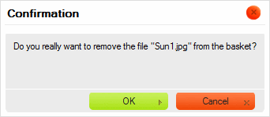

Koszyk to folder dost?pny w panelu folder籀w, otwieraj?cy panel koszyka.
Koszyk jest wirtualnym, tymczasowym pojemnikiem wykorzystywanym do wykonywania operacji na grupach plik籀w w CKFinderze. Jest pojemnikiem wirtualnym, gdy髒 pliki umieszczane w koszyku nie s? fizycznie przenoszone z ich folder籀w macierzystych.
Poni髒szy rysunek pokazuje panel koszyka CKFindera, kt籀ry zostaje rozwini?ty po klikni?ciu folderu Koszyk (Basket) w panelu folder籀w.
Uwaga: Koszyk jest folderem prywatnym, co oznacza, i髒 nie jest wsp籀?dzielony z innymi u髒ytkownikami systemu plik籀w i powi?zany jest z Twoj? sesj? przegl?darki internetowej.
Na pocz?tku ka髒dej sesji CKFindera koszyk jest pusty i wy?wietlony zostaje komunikat zach?caj?cy do przeci?gni?cia do niego plik籀w. W celu dodania plik籀w do koszyka przejd驕 do folderu zawieraj?cego plik, kt籀ry zamierzasz u髒y?, przeci?gnij go nad folder koszyka w panelu folder籀w, i upu??.

Plik powinien si? teraz pojawi? w folderze koszyka.
Kiedy plik zostaje umieszczony w koszyku, jego menu kontekstowe zmieni si? w taki spos籀b, by uwzgl?dnia? jedynie operacje dost?pne w tym specjalnym folderze.

Istniej? dwie metody usuwania pliku z koszyka. Po pierwsze, mo髒na usun?? pojedynczy plik, wybieraj?c opcj? Usu? z koszyka (Remove from Basket) z menu kontekstowego pliku. Po wybraniu tej opcji wy?wietlone zostanie okno dialogowe z potwierdzeniem.

Mo髒liwe jest r籀wnie髒 usuni?cie wszystkich plik籀w z koszyka naraz poprzez klikni?cie przycisku Wyczy?? koszyk (Clear Basket) na pasku narz?dzi. Po klikni?ciu przycisku zostaniesz poproszony o potwierdzenie, czy chcesz wyczy?ci? ca?? zawarto?? koszyka.

Uwaga: Usuni?cie pliku z koszyka nie usuwa go z systemu plik籀w. Plik ten w dalszym ci?gu b?dzie dost?pny w swoim folderze macierzystym.
Jak wspomniano wy髒ej, koszyk jest folderem wirtualnym, kt籀ry pokazuje pliki fizycznie znajduj?ce si? w innych folderach systemu plik籀w. Je?li chcesz odnale驕? folder 驕r籀d?owy pliku, wybierz opcj? Otw籀rz folder z plikiem (Open Parent Folder) z menu kontekstowego pliku. CKFinder otworzy wtedy folder, w kt籀rym oryginalnie znajduje si? plik.
Po umieszczeniu plik籀w w koszyku b?dziesz m籀g? skopiowa? je do innego (fizycznego) folderu. W celu skopiowania plik籀w wska髒 folder docelowy w panelu folder籀w i wybierz opcj? Skopiuj pliki z koszyka (Copy Files from Basket) z menu kontekstowego folderu.
Wy?wietlone zostanie okno potwierdzenia wymieniaj?ce pliki, kt籀re zosta?y skopiowane do folderu docelowego.

Pliki te zostan? zduplikowane, a ich kopie umieszczone b?d? w folderze docelowym. Zawarto?? folderu 驕r籀d?owego nie zmieni si?.
Koszyk przydaje si? r籀wnie髒 wtedy, gdy chcesz przenie?? jakie? pliki pomi?dzy folderami. Po umieszczeniu plik籀w w koszyku nale髒y wskaza? folder docelowy w panelu folder籀w i wybra? opcj? Przenie? pliki z koszyka (Move Files from Basket) z menu kontekstowego folderu.
Wy?wietlone zostanie okno potwierdzenia wymieniaj?ce pliki, kt籀re zosta?y przeniesione do folderu docelowego.

Pliki te zostan? usuni?te z folderu 驕r籀d?owego i dodane do folderu docelowego.